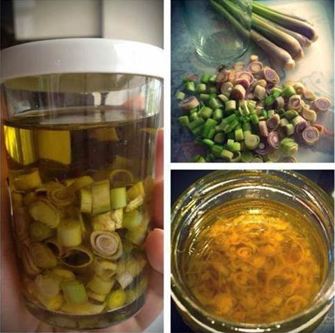

Gội đầu với sả theo cách này, tóc rụng kinh niên cũng phải mọc như nấm sau mưa
1.Nguyên liệu cần chuẩn bị+ 1 cây sả
+ Dầu oliu (bạn nên chọn loại extra virgin để dùng cho cả tóc và da nhé)
+ Vỏ bưởi hoặc vỏ cam, chanh
2.Cách thực hiện
Bước 1: Sả rửa sạch, thái nhỏ.
Bước 2: Dùng dao tách cùi trắng bỏ đi và giữ lại phần vỏ xanh, sau đó thái mỏng.

Bước 4: Khi hỗn hợp nguội thì cho vào bình đựng đã rửa sạch đã chuẩn bị, đậy kín nắp, bảo quản ở nơi thoáng mát, tránh tiếp xúc với ánh nắng mặt trời.

3.Cách sử dụngBước 1: Bạn gội đầu như bình thường với dầu gội.
Bước 2: Lấy 1 lượng dung dịch sả, bưởi vừa đủ rồi thoa đều từ chân đến ngọn tóc, đồng thời massage nhẹ nhàng trong khoảng 3 – 5 phút cho dưỡng chất thấm sâu vào từng ngọn tóc và da đầu.
Bước 3: Tiếp tục ủ tóc bằng khăn hoặc mũ chụp tóc trong 15- 20 phút nữa.
Bước 4: Gội lại với nước. Áp dụng tuần 2 – 3 lần cùng ngày bạn gội đầu.
Tinh dầu trong vỏ bưởi kích thích nang lông mọc phát triển, hỗ trợ làm khỏe tóc từ chân, ngăn tóc bớt rụng và mọc nhanh hơn. Dầu oliu làm tóc thêm bóng mượt, dưỡng tóc mềm mại, dày lên trông thấy. Bên cạnh đó, sả có tác dụng kháng khuẩn, loại bỏ gàu xuất sắc, điều tiết lượng dầu trên da đầu giúp tóc khỏe, không bị nấm và đặc biệt là lâu bị bết, bẩn.
Sử dụng nguyên liệu thiên nhiên được tin dùng trong dân gian cũng như đời sống hiện đại, bạn hoàn toàn có thể yên tâm gội đầu bằng cách này mà không lo ngứa, dị ứng, giúp tóc bớt rụng, mọc đẹp như ý muốn.
Xin liên hệ ngay với Mỹ Phẩm Xách Tay Cao Cấp để biết thêm thông tin về giá cả sản phẩm:
Điện thoại: 0868 017117 ~ 0904 245355;
Facebook: Phạm Thị Minh Thi
Điện thoại: 0868 017117 ~ 0904 245355;
Facebook: Phạm Thị Minh Thi
- Quý khách nhận hàng mới thanh toán tiền;
- Giao hàng trực tiếp với Khách hàng tại Hà Nội;
- Khách hàng ở tỉnh khác chúng tôi sẽ chuyển phát nhanh theo đường bưu điện;
- Miễn phí toàn bộ cước vận chuyển đối với khách hàng mua lẻ trên toàn quốc.